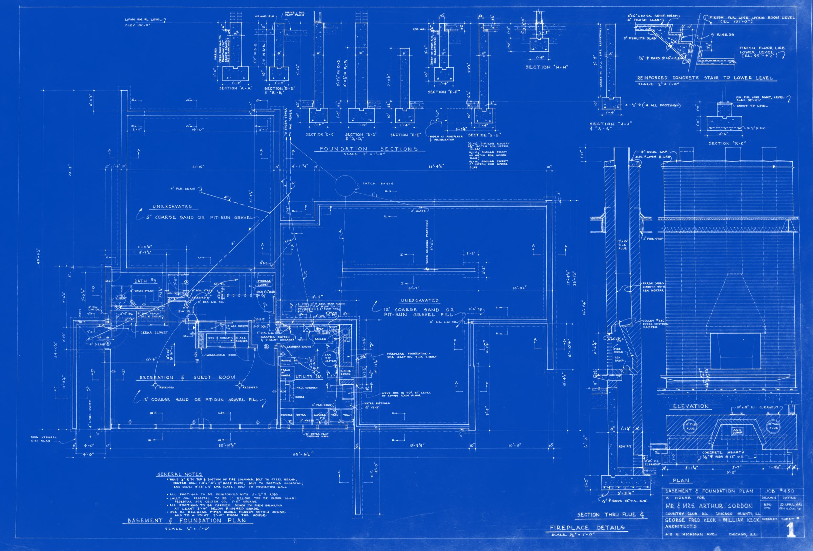
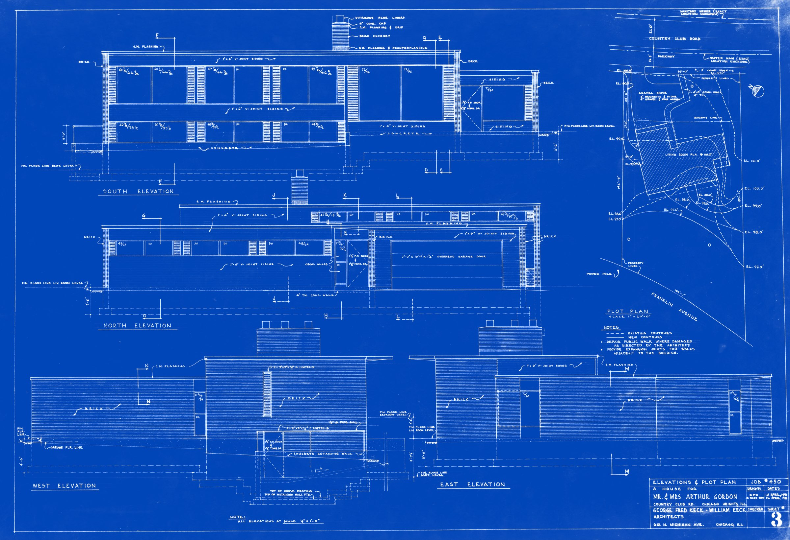
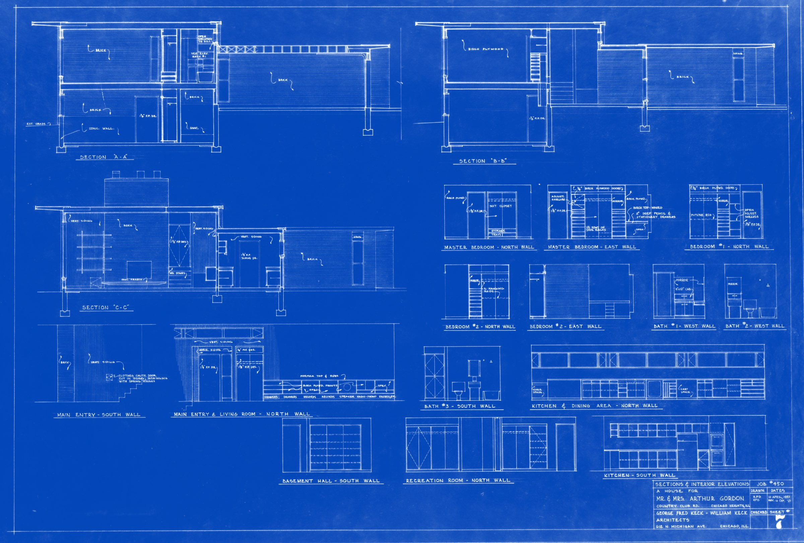
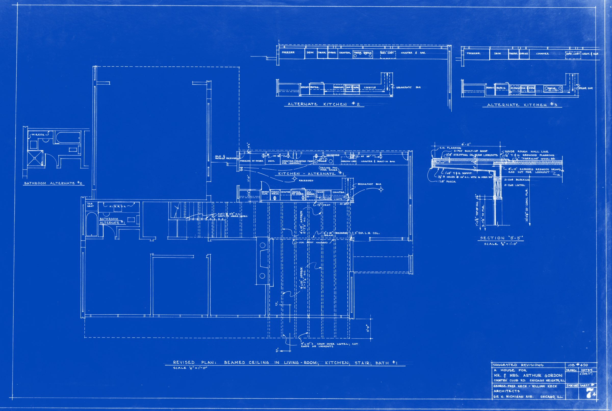
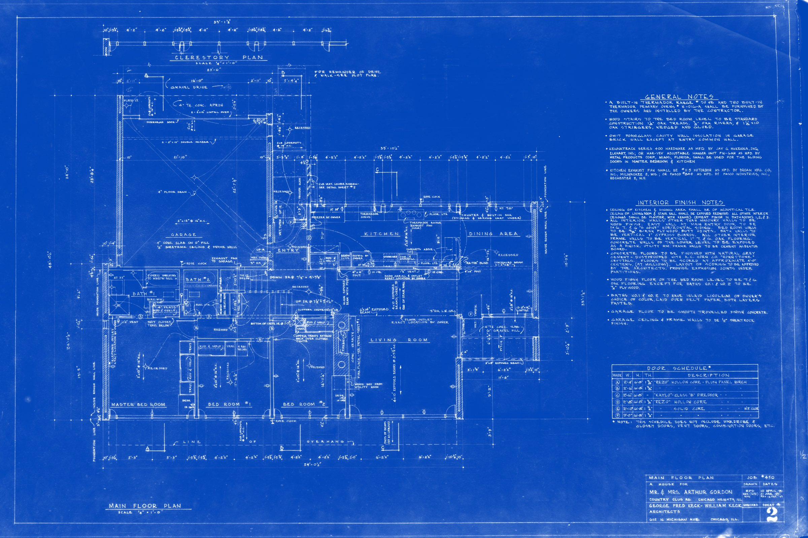
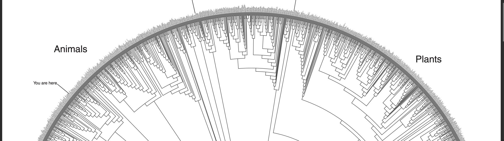
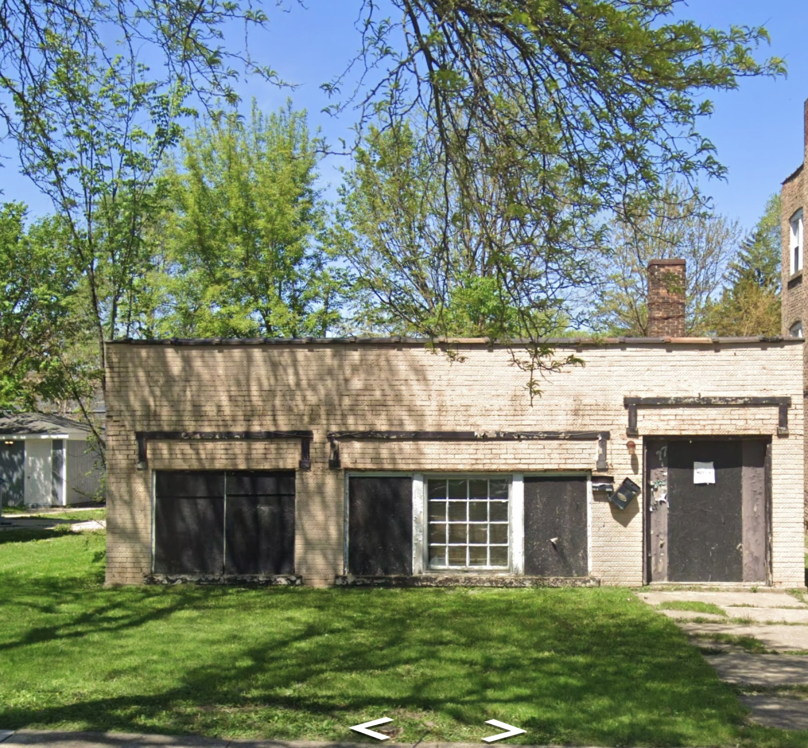
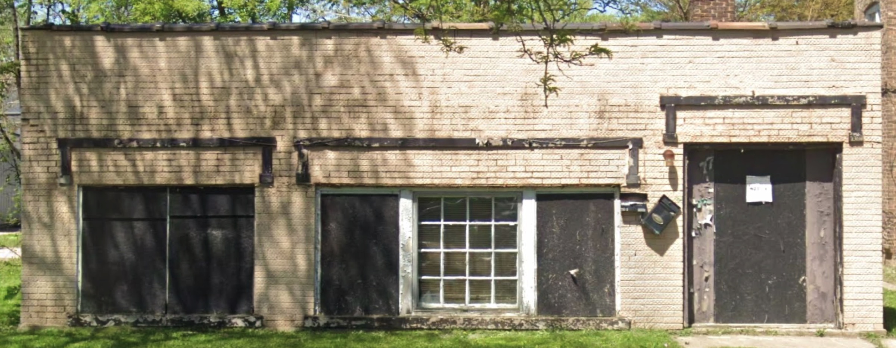
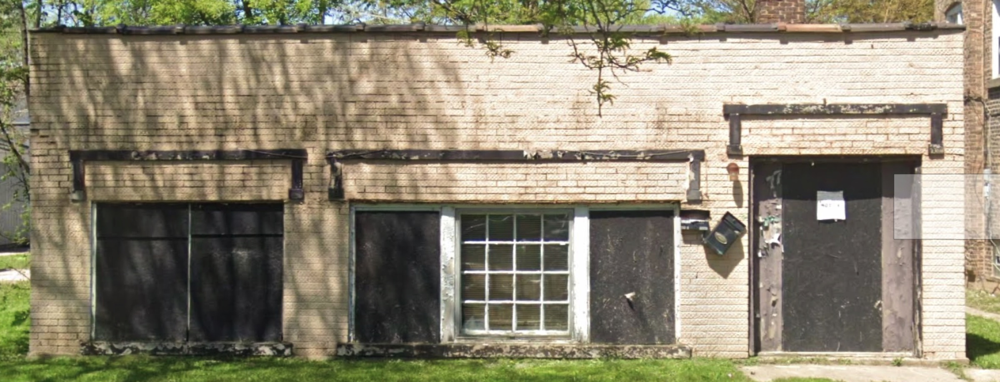

In the winter of 1933, on the frozen Chicago lakefront, George Fred Keck finished the all-glass House of Tomorrow for the Century of Progress World's Fair — America's first glass house. Workers stripping their coats inside the unheated structure in December showed him something that changed everything: the sun could heat a building. Nineteen years later, he and his brother William brought every lesson learned directly to your corner lot on Country Club Road.
Studied at the University of Illinois. Worked for D.H. Burnham & Company before opening his own practice in 1926. His all-glass House of Tomorrow was the moment he realized the sun itself could heat a building. He spent the rest of his career proving it, working with Adler Planetarium scientists to calculate sun-angle overhangs for each house — decades before sustainability was a concept.
Keck & Keck went on to design hundreds of quietly groundbreaking passive solar houses: low, warm, horizontal homes built of cedar, brick, and redwood that breathed with the seasons and opened to nature through walls of glass.
Joined his brother's practice in 1931. Together they built the most innovative and livable practice in the midwest — simultaneously radical and deeply comfortable. The University of Wisconsin–Madison holds the Keck & Keck firm archive; the Art Institute of Chicago's Ryerson & Burnham Archives holds project files. Both hold documentation of Job No. 450.
In 1977, William returned to 240 Country Club Road to remodel the house he and his brother had designed 25 years earlier. An extraordinary act of architectural stewardship.
"Openness inside and openness to nature — a feeling of being surrounded by earth-born surfaces such as brick and wood, and a relaxed attitude designed for casual family living."— Keck & Keck residential design philosophy
When Arthur and Mrs. Gordon approached Keck & Keck, the architects drew up three entirely different design schemes for the corner lot at Country Club Road and Franklin Avenue, Chicago Heights. The house built — Job No. 450 — was completed in 1952 and has barely been altered in over seven decades.
A split-level passive solar masterwork: cedar-clad, brick-anchored, with walls of fixed Thermopane glass and louvered ventilation panels. The blueprint set includes a separately drawn Clerestory Plan. In 1954, the Chicago Heights Star documented a meeting held in "the home of Mrs. Arthur Gordon, 240 Country Club Road."
Sited and oriented to maximize winter sun through south-facing glass. Roof overhangs calculated with Adler Planetarium sun-angle data to block the high summer sun exactly.
Fixed double-paned Thermopane windows in every major room. Separate louvered ventilation panels allow controlled cross-ventilation without breaking the glass wall.
Brick and concrete slab floors absorb daytime solar heat and release it slowly through the night — zero mechanical assistance required.
A dedicated clerestory plan — drawn separately on Sheet 2 — brings diffuse northern light deep into the interior while the main roof manages direct solar gain.
Kitchen: exposed redwood (original spec). Living room: 4×10 exposed redwood beams with ¼″ T&G redwood planking per the 1951 revision sheet.
The home steps from bedroom to living to garage — each level responding to the natural grade. Sheet 7 cross-sections reveal a sculptural interior volume invisible from the street.
Every material, finish, and hardware specification is documented across seven drawing sheets in the Keck office hand. What follows is drawn directly from Job No. 450.
Five original Keck & Keck drawing sheets survive — drawn April–May 1951, checked by the Keck office. Scroll to develop each sheet. Click to enlarge.

Foundation sections A-A through K-K, reinforced concrete stair to lower level, Recreation & Guest Room, Utility Room, and the fireplace rendered in full elevation, plan, and section — tile flue, ash dump, fire door, damper, and 4″ concrete cap all specified.

All four elevations (N/S/E/W) plus the site plan at 1″=10′-0″. Shows the corner lot at Country Club Road and Franklin Avenue — gravel drive entry, property lines, power pole, and the precise positioning of the building on grade. Every material zone, flashing, and siding profile annotated.

Three building cross-sections plus interior elevations of every room: Master Bedroom north and east walls, Bedrooms #1 and #2, all three Bathrooms, Main Entry, the Living Room north wall built-in cabinet, Kitchen & Dining north and south walls, Basement Hall, and Recreation Room.

Three alternate kitchen configurations, two bathroom alternates, revised beamed ceiling plan, and Section D-D (scale ¾″=1′-0″) detailing the exact roof construction: 3-ply built-up roof, 4×10 exposed redwood beams, ¼″ T&G redwood planking, 2×6 fascia, and beam lookout profile.

The complete main floor layout — Living Room, Dining, Kitchen, three Bedrooms, all Bathrooms, and the separately drawn Clerestory Plan that pulls diffuse northern light deep into the interior. Every room dimension, wall thickness, door swing, and window position as Keck drew them in 1951.
Sheet 7 documents the full interior elevation of the Main Entry & Living Room North Wall. Here, drawn in Keck's office hand, is a built-in cabinet and credenza unit: a floor-to-ceiling millwork piece combining records storage, a dedicated speaker enclosure, a radio and phonograph compartment, drawers, and a Formica work surface.
This unit was removed at some point in the home's seventy-year history. It was not furniture — it was architecture, designed specifically for this wall, beneath these 4×10 redwood beams. The blueprint gives us everything needed to rebuild it exactly as Keck drew it.
Research path for reconstruction: The University of Wisconsin–Madison Digital Collections holds the Keck & Keck firm archive. Similar built-in units appear in other Keck houses of the same period and may provide supplementary millwork photography. Contact UW-Madison Special Collections requesting Job No. 450 documentation.
Five of the original seven-plus drawing sheets survive in this house. Additional drawings exist in the firm archive and historical record.
The UW-Madison Digital Collections hold the Keck & Keck firm archive — photographs and drawings from across their Illinois and Wisconsin projects. Primary source for Job No. 450 photography and any remaining drawing sheets.
UW Digital Collections → Keck & Keck ↗The Ryerson & Burnham Archives hold architectural records for Keck & Keck including drawings, photographs, and project files. First contact for any surviving Job No. 450 drawings beyond the five sheets in the home.
Art Institute → Keck & Keck ↗The Hedrich Blessing Collection documents mid-century Chicago and suburban modernist homes. Keck & Keck houses were frequently photographed by Hedrich Blessing. Professional photographs of 240 Country Club Road may exist here.
Chicago History Museum ↗Municipal records, permit records, and newspaper archives — including the 1954 Chicago Heights Star article documenting a gathering at the Gordon home. Cook County property records document the full ownership chain from 1952.
Chicago Heights Preservation ↗Seven decades of occupancy. The cedar, the glass walls, the light this house was designed to hold.



